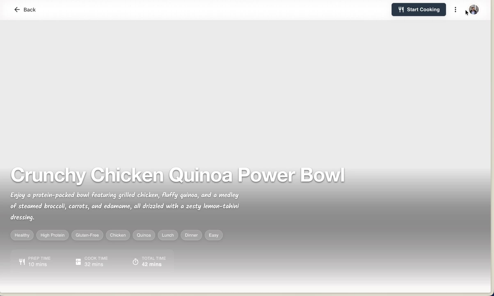
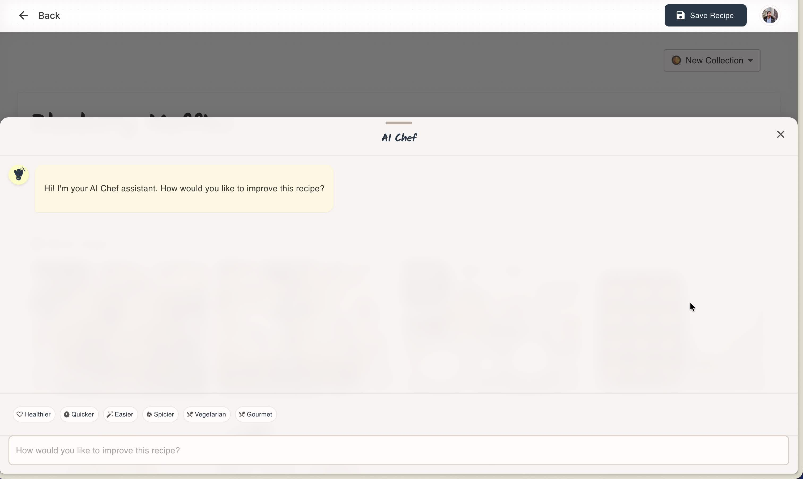
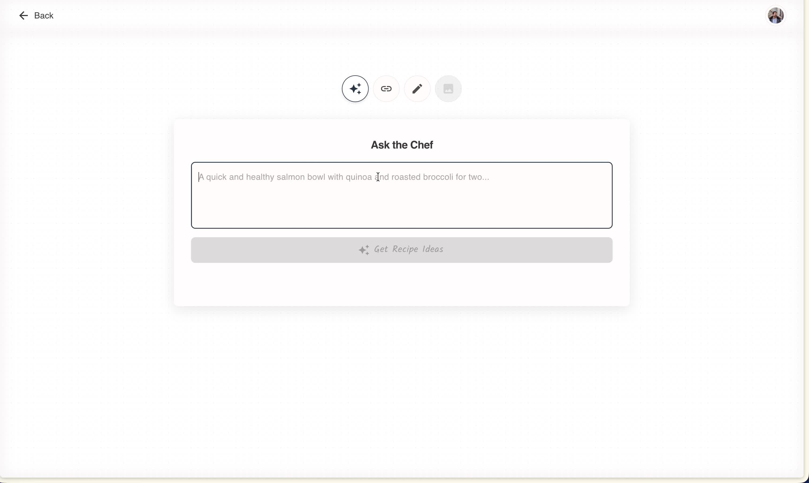
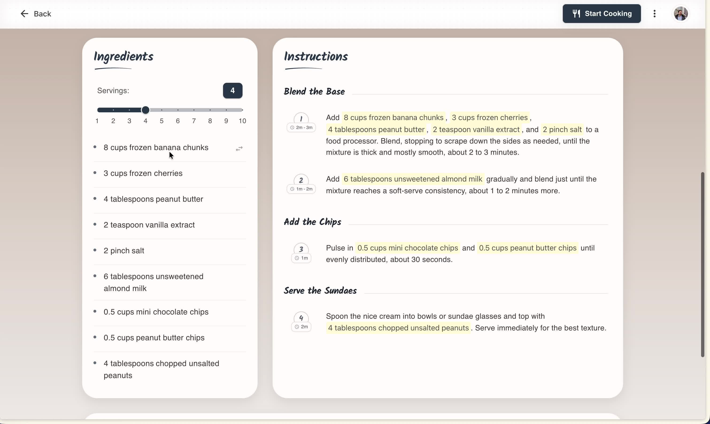
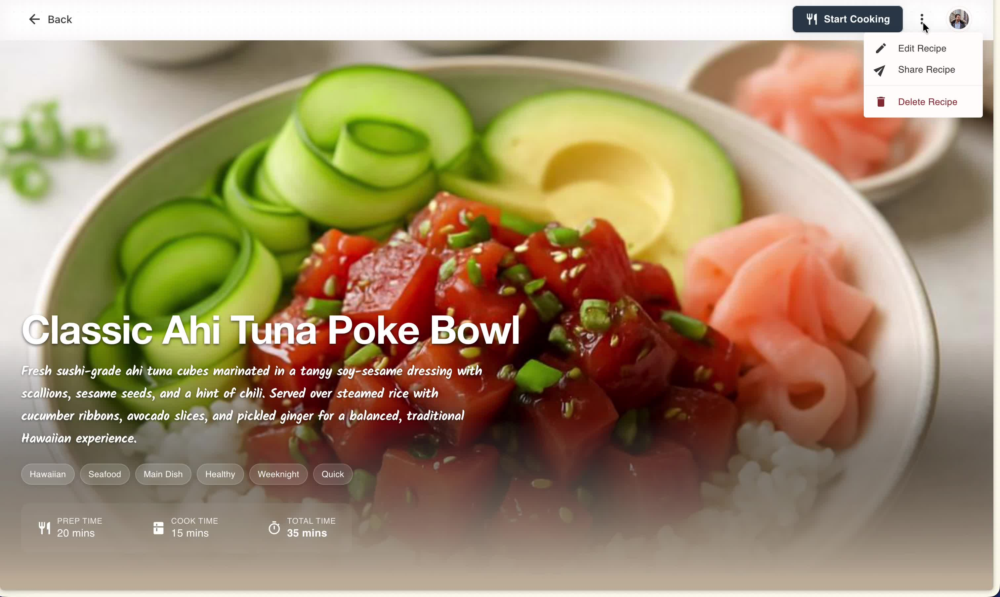

Simmer Product Tour
Explore Simmer in action
Watch the guided demos to see how Simmer helps you create, edit, share, and cook from your recipes.

Recipe Editing Demo
Edit a recipe, generate an image with AI, and refine instructions with the rich editor.

AI Chef Guided Editing
Chat with your recipe in plain language, review changes, and apply them directly.

AI Chef New Recipe Creation
Start from nothing and shape a brand-new recipe with the guided AI Chef flow.

Cooking Mode and Quick Adjustments
Scale servings, apply substitutions, and step through a mobile-friendly cooking experience.

Sharing and Collaboration
Share recipes and collections publicly or privately, and collaborate as viewers or editors.